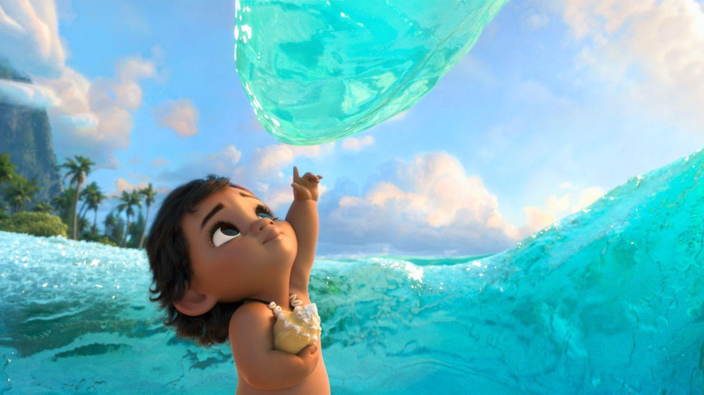

ﾉhi~🧡💛💚💙💜🤎🖤💕💓💗
这是一个简单的电影简介
亲爱的visitors,如果有什么想要了解的电影······👀
欢迎来找我呀！！！🎈
《海洋奇缘》是由罗恩·克莱蒙兹、约翰·马斯克等联合执导，奥丽依·卡拉瓦霍、道恩·强森等联合主演。于2016年11月25日在中国大陆上映。 该片讲述了作为航海世家后代的波里尼西亚公主莫阿娜，为了找寻传说中的神秘之岛，独自踏上了航海之旅的故事。 2017年2月，该片荣获第44届安妮奖最佳动画视觉效果奖. 2018年5月20日，2018美国公告牌音乐奖（2018 Billboard Music Awards）在美国拉斯维加斯举行，《海洋奇缘》荣获年度最佳原声。🎄
故事发生在2000年前的南太平洋小岛上，那里居住着一个爱好航海的波里尼西亚人部落，部落酋长有一个独生女叫摩瓦娜·瓦里基，在祖母的鼓励下她一心想去探索临近的岛屿，但她的父亲不许。 于是摩瓦娜就在祖母死后，偷偷划船溜出岛，去寻找传说中的岛屿。她有两位同行的伙伴，一个是公鸡Hei，一个是猪Pua。 摩瓦娜一行在一座小岛上搁浅了，这时一座图腾雕像Maui活了，他是南太平洋岛国神话里的超级英雄，可以变成鸟儿，身上刻着很多可以活过来的纹身，还有一个法宝是魔法鱼钩。 接下来摩阿娜就和他一起前往开放的海洋、克服各种凶险，以完成祖先在一千年前未尽的航程。🌳
该片是迪士尼动画工厂的第57部动画长片。 在早期的设定中，半神毛伊是个运动感十足的光头，没有标志性卷发。 在该片的早期版本中，憨憨是一只聪明机灵的鸡。为了保留这个角色，剧情组的少数成员花了几天提出了一个降低智商的方案。 该片宣传期借着万圣节的东风推出了一款《海洋奇缘》主题的万圣节服装，然而这套服装刚推出就在社交媒体上饱受恶评。 因为该片片名“Moana”和意大利一位成人电影女星重名，在意大利的市场团队被强迫将片名更换掉。 波里尼西亚人是居住在南太平洋小岛上的民族，有着自己独特的风土文化、宗教艺术。大约三千年前他们航行在广袤的南太平洋上，发现了大洋洲的很多岛屿，但一千年后他们突然中止了航行，一直没有人搞明白其中的原因。该片的灵感就是从这开始的。 编剧杰拉德·布什为了创作出完美的剧本，他在四年内间为《海洋奇缘》写出了700多个版本。 为了贴合现实，导演们曾带着动画师、音乐班底两次探访FIJI、 SONOA、大溪地等南太平洋岛屿，并和当地村民、刺青专家、地质学家交流，就是为了深入了解当地风土人情和文化传说。结果他们为村名们航行的热情、与海洋的依恋深深感动，因此希望在片中刻画这种名族情感。🍀

迪士尼全新动画片《海洋奇缘》继释出几款预告片后，首支片段终于趁热释出，这位大洋洲的部落公主再次展现出独特的个人魅力，还真是个厉害的公主呢。 片段展现了莫亚娜与半神毛伊首次见面的场景，莫言娜手握船桨一脸霸气的拦住正在举船前行的毛伊，还没等自我介绍，就被自恋的毛伊打断了。 毛伊自称是“Hero of man”，不久又觉得不够，加上“woman”，成为“全人类的英雄”。毛伊显然以为莫亚娜公主是自己的粉丝，骄傲地说“你并不是每天都能见到心目中的英雄”，还自谦道“毛伊总有时间陪他的粉丝”，结果被莫亚娜用船桨狠狠打过去。 公主大喊道“你才不是我的英雄！”毛伊一脸尴尬，败下阵来。
《海洋奇缘》不论是视觉、听觉还是心灵感受都让人满足，该片是迪士尼动画的巅峰代表作之一，充满活力的冒险故事、先进的CG动画技术、传统的叙事手法和多彩的角色设定，再加上出色的配音 （《好莱坞报道者》评）。 《海洋奇缘》有着很多迪士尼式的经典冒险元素，比如爱犯蠢卖萌的伙伴。对于一些老派的迪士尼动画迷，尤其是看着《美女与野兽》长大的一代，可能会觉得故事并没有太多新奇之处。 但莫阿娜这个角色却会给人耳目一新的感觉，聪明又热情，和以往那些为爱而生的欧洲公主大相径庭，不论是个性还是长相上都更加复合实际，而不是把一个新灵魂又植入到一尊和以往一样的身躯里 （《娱乐周刊》、《综艺网》评）。🌵我，Echo——爱三毛，爱海子，爱音乐，爱电影，爱播音，爱生活
悄咪咪附赠我的QQ空间~欢迎来访~